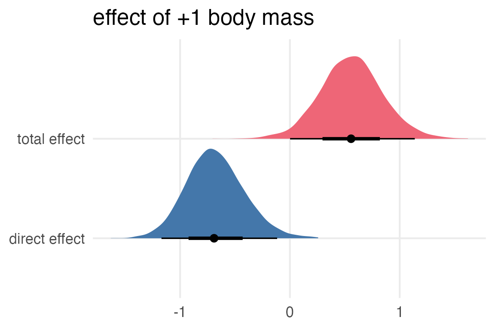

Code
library(tidyverse)
library(tidybayes)
library(brms)
library(gt)
library(gtsummary)
library(patchwork)
library(ggblend)
library(marginaleffects)
library(dagitty)
library(ggdag)
source(here::here("_defaults.r"))July 13, 2023
Ok, for the milk data, where the neocortex percentage is correlated with bodymass, how would we get the expected effect of increasing body mass?
We’ll have to commit to a DAG, so I’ll go with this:
flowchart LR Mass --> Neocortex Mass --> KCal Neocortex --> KCal
Making the DAG in Mermaid was so much nicer!
flowchart LR
Mass --> Neocortex
Mass --> KCal
Neocortex --> KCalSo I’ll use this formula:
I’m still just superstitiously using set_rescor(), since I don’t really understand where it’s supposed to be used or not, but everyone seems to include it in these things.
brm(
formula = mnk_formula,
prior = c(
prior(normal(0,0.5), class = b, resp = kcalz),
prior(normal(0,0.5), class = b, resp = neocz),
prior(normal(0,0.2), class = Intercept, resp = kcalz),
prior(normal(0,0.2), class = Intercept, resp = neocz),
prior(exponential(1), class = sigma, resp = kcalz),
prior(exponential(1), class = sigma, resp = neocz)
),
data = milk_to_mod,
cores = 4,
file = "mnk_model.rds",
backend = "cmdstanr"
)->
mnk_model Family: MV(gaussian, gaussian)
Links: mu = identity; sigma = identity
mu = identity; sigma = identity
Formula: kcal_z ~ log_mass_z + neoc_z
neoc_z ~ log_mass_z
Data: milk_to_mod (Number of observations: 17)
Draws: 4 chains, each with iter = 2000; warmup = 1000; thin = 1;
total post-warmup draws = 4000
Population-Level Effects:
Estimate Est.Error l-95% CI u-95% CI Rhat Bulk_ESS Tail_ESS
kcalz_Intercept 0.00 0.14 -0.27 0.27 1.00 4345 2715
neocz_Intercept -0.00 0.13 -0.26 0.25 1.00 4328 2924
kcalz_log_mass_z -0.68 0.26 -1.17 -0.12 1.00 2730 2916
kcalz_neoc_z 0.57 0.26 0.03 1.08 1.00 2662 2873
neocz_log_mass_z 0.67 0.17 0.32 1.00 1.00 3994 2789
Family Specific Parameters:
Estimate Est.Error l-95% CI u-95% CI Rhat Bulk_ESS Tail_ESS
sigma_kcalz 0.81 0.17 0.56 1.21 1.00 3244 2719
sigma_neocz 0.72 0.14 0.51 1.05 1.00 3922 2591
Draws were sampled using sample(hmc). For each parameter, Bulk_ESS
and Tail_ESS are effective sample size measures, and Rhat is the potential
scale reduction factor on split chains (at convergence, Rhat = 1).I think to work out the total effect of increasing body mass, I need to get the estimated neocortex size for each body mass, and then use that to get the estimated caloric value?
I also don’t think the out-of-the-box functions like marginaleffects::predictions() or tidybayes::add_epred_draws() will do the trick either? We’ll have to get analog.
Ok, if log_mass_z = 0, the expected value of neocortex would just be the Intercept, or b_neocz_Intercept. I’ll create a column called pred_neoc_m0 to mean “predicted neocortex percentage when mass = 0”. Then, I’ll create a column called pred_neoc_m1 for “predicted neocortex percentage when mass = 1”
Ok, now to get the predicted kcal when body mass = 0, I’ll have to multiply pred_neoc_mo0 by the neocortex slope for kcal.
Now to get the predicted kcal when mass = 1, I’ll need to multiply the neocortex slope by the predicted neocortex size when mass = 1, and add the body mass slope.
Now, subtract pred_kcal_m1 from pred_kcal_m0 to get the total effect.
Now, I’ll compare the total effect vs the direct effect.
mnk_parameters |>
select(.draw, b_kcalz_log_mass_z, total_mass_effect) |>
pivot_longer(-1) |>
mutate(
name = case_match(
name,
"b_kcalz_log_mass_z" ~ "direct effect",
"total_mass_effect" ~ "total effect"
)
) |>
ggplot(aes(value, name, fill = name))+
stat_halfeye()+
labs(
fill = "effect",
y = NULL,
x = NULL,
title = "effect of +1 body mass"
)+
theme(legend.position = "none")
Well, I’m a bit nervous about whether I’ve done this right, especially since the estimated effect of body mass without including neocortex in the model was still on the negative side of 0.
But, if we take the DAG seriously, then increasing body mass pretty strongly increases neocortex percentage, and that pretty strongly increases the kcal of the milk… so maybe this is right!
Returning to the height data to include some categorical predictors:
To use the “indexing” approach, I think we’ll need to use the -1 formula syntax to remove the intercept.
Let’s look at the default priors.
prior class coef group resp dpar nlpar lb ub source
(flat) b default
(flat) b sexfemale (vectorized)
(flat) b sexmale (vectorized)
(flat) b weight (vectorized)
student_t(3, 0, 8.5) sigma 0 defaultWell, it looks like there’s not a very easy way to set one prior over the parameters for sex and a different prior for the slope of weight. For now I’ll just leave the priors at their defaults and see what I get.
Family: gaussian
Links: mu = identity; sigma = identity
Formula: height ~ -1 + sex + weight
Data: height_to_model (Number of observations: 352)
Draws: 4 chains, each with iter = 2000; warmup = 1000; thin = 1;
total post-warmup draws = 4000
Population-Level Effects:
Estimate Est.Error l-95% CI u-95% CI Rhat Bulk_ESS Tail_ESS
sexfemale 122.74 1.70 119.46 126.01 1.00 835 1208
sexmale 129.24 1.95 125.47 133.04 1.00 829 1217
weight 0.64 0.04 0.56 0.72 1.00 820 1264
Family Specific Parameters:
Estimate Est.Error l-95% CI u-95% CI Rhat Bulk_ESS Tail_ESS
sigma 4.29 0.16 3.98 4.63 1.00 1552 1700
Draws were sampled using sampling(NUTS). For each parameter, Bulk_ESS
and Tail_ESS are effective sample size measures, and Rhat is the potential
scale reduction factor on split chains (at convergence, Rhat = 1).I was going to do some more fancier modelling, looking at the effect of sex on weight, but I think if I was going to draw the DAG out, it would be something like this:
flowchart LR sex --> height height --> weight sex --> weight
If we have to draw an arrow of causality between height and weight, it has to go height \(\rightarrow\) weight. Cause taller people necessarily have more mass than shorter people, but people with more mass don’t necessarily be taller.